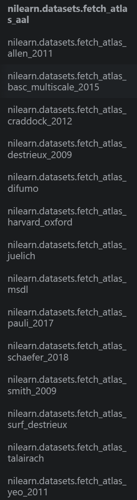

Singularity: Image container suitable for HPC environment, where users usually do not have root access.
conda create -n singularity python=3.10conda activate singularityconda install -c conda-forge singularitysmriprep: Preprocessing for structural MRI data. It performs basic processing steps (subject-wise averaging, B1 field correction, spatial normalization, segmentation, skullstripping etc.)
singularity build /my_images/smriprep.simg \
docker://nipreps/smriprep:<version>
<version> is the version of the image to download. (version information can be found here)fmriprep:Preprocessing for functional MRI data. It performs basic processing steps (slice-timing correction, motion correction, spatial normalization, segmentation, skullstripping etc.)
singularity build /my_images/fmriprep.simg \
docker://nipreps/fmriprep:<version>
<version> is the version of the image to download. (version information can be found here)qsiprep:Preprocessing and Reconstruction for DWI data.
singularity build qsiprep.sif docker://pennbbl/qsiprep:<version>MRIQC extracts no-reference IQMs (image quality metrics) from structural (T1w and T2w) and functional MRI (magnetic resonance imaging) data.
singularity build mriqc.sif docker://poldracklab/mriqc:<version>Clinica [optional]: Converts some famous datasets (ADNI, AIBL, OASIS, etc.) to BIDS format.
pip install clinicahcp2bids [optional]: Converts HCP dataset to BIDS format.
git clone https://github.com/niniko1997/hcp2bids.git
Clinica or hcp2bids to convert above data to BIDS format.dcm2bids or HeudiConvto convert your data to BIDS format.
conda install -c conda-forge dcm2bidspip install heudiconv( dcm2niix is required for local heudiconv) or singularity pull docker://nipy/heudiconv:latestmriqc bids-root/ output-folder/ participant (all the subjects in the bids-root folder will be processed)mriqc bids-root/ output-folder/ participant --participant-label S01 S02 S03(bids-root/sub-S01,bids-root/sub-S02, and bids-root/sub-S03 will be processed)mriqc bids-root/ output-folder/ group #!/bin/bash
singularity run --cleanenv /biolab/zhouzx/Code/simg/smriprep/smriprep.simg \
/biolab/zhouzx/Code/Data/hcp-bids /biolab/zhouzx/Code/Data/hcp-bids/outputs \
participant \
--participant-label 996782 \
--fs-license-file /biolab/zhouzx/freesurfer/freesurfer/license.txt \
-w /biolab/zhouzx/Code/Data/ds002843-processed/work \
--write-graph \
-vv \
--nprocs 64 \
--omp-nthreads 48
standard space, use --output-spaces to specify other output spaces. Standard spaces will be extracted for spatial normalization. #!/bin/bash
export SINGULARITYENV_FS_LICENSE=/biolab/zhouzx/freesurfer/freesurfer/license.txt
singularity run --cleanenv fmriprep/fmriprep-23.1.3.simg \
/biolab/zhouzx/Code/Data/ds002843-download /biolab/zhouzx/Code/Data/ds002843-processed \
participant \
--participant-label dmp0001 \
-w /biolab/zhouzx/Code/Data/ds002843-processed/work \
--write-graph \
--nthreads 64 \
--omp-nthreads 48
MNI152NLin2009cAsym, which is different from smriprep. use --output-spaces to specify other output spaces. Standard spaces will be extracted for spatial normalization.--fs-subjects-dir to specify the freesurfer output directory.nilearn is a python package for statistical learning on neuroimaging data. It provides easy access to a large variety of imaging algorithms within Python. We will use it to extract the time series of each ROI and calculate the functional connectivity matrix.qsiprep is much easier to use because it has included both preprocessing and reconstruction. #!/bin/bash
singularity run --cleanenv /biolab/zhouzx/Code/simg/qsiprep/qsiprep.sif \
/biolab/zhouzx/Code/Data/ds002843-download /biolab/zhouzx/Code/Data/ds002843-processed \
participant \
--participant-label dmp0188 \
--fs-license-file /biolab/zhouzx/freesurfer/freesurfer/license.txt \
-w /biolab/zhouzx/Code/Data/ds002843-processed/work \
--write-graph \
--freesurfer-input /biolab/zhouzx/Code/Data/ds002843-processed/sourcedata/freesurfer/sub-dmp0188 \
--output-resolution 1.2 \
-v
qsiprep are schaefer100x7, schaefer100x17, schaefer200x7, schaefer200x17, schaefer400x7, schaefer400x17, brainnetome246, aicha384,gordon333, aal116, power264.nilearn are:--participant-label xxx with --participant-label ${PARTICIPANT_LABEL}, where PARTICIPANT_LABEL ="0001 0004 0005" .